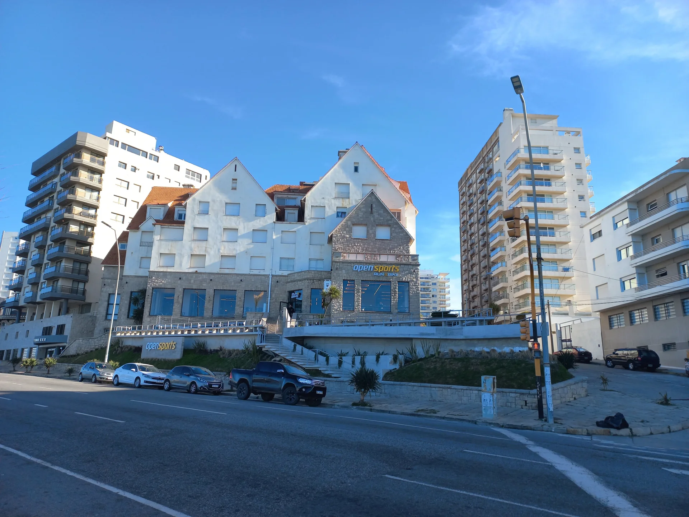
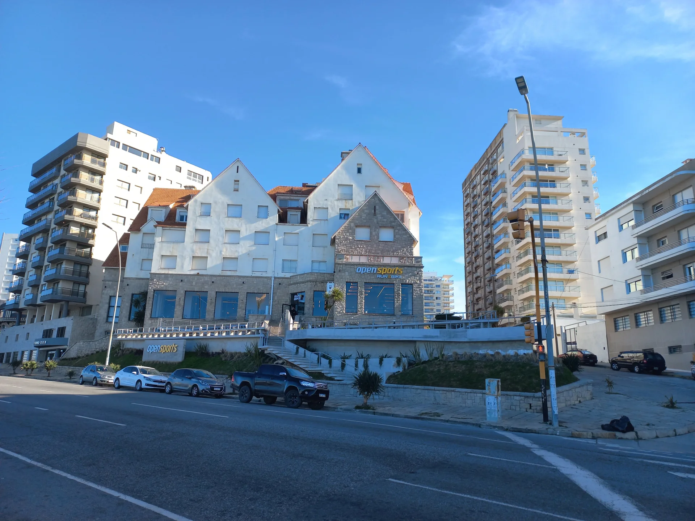

Playa Grande
Es una de las playas más emblemáticas de Mar del Plata, conocida por su belleza natural y su ambiente vibrante. Es el lugar perfecto para disfrutar de un día de sol, mar y diversión. Ya sea que busques relajarte, practicar deportes acuáticos o disfrutar de la vida nocturna, Playa Grande tiene algo para todos.
Al caer la tarde, Playa Grande se transforma. Sus bares y restaurantes se llenan de vida, ofreciendo música en vivo y deliciosos platos locales. Es el lugar perfecto para disfrutar de una cena con vista al mar mientras sientes la brisa marina.
Playa Grande es famosa por su amplia franja de arena dorada y sus aguas limpias y tranquilas, ideales para disfrutar de un día bajo el sol. Es perfecta para relajarse, nadar o simplemente pasear por la orilla.
Esta playa es conocida por ser un espacio amigable para familias. Con servicios como alquiler de sombrillas y reposeras, así como una variada oferta gastronómica en los paradores cercanos, es un lugar ideal para pasar el día en compañía de seres queridos.rte.
Si eres amante de la aventura, Playa Grande ofrece diversas actividades acuáticas como surf, paddleboarding y kayak. Las condiciones del mar son perfectas para disfrutar de estas experiencias.
 
